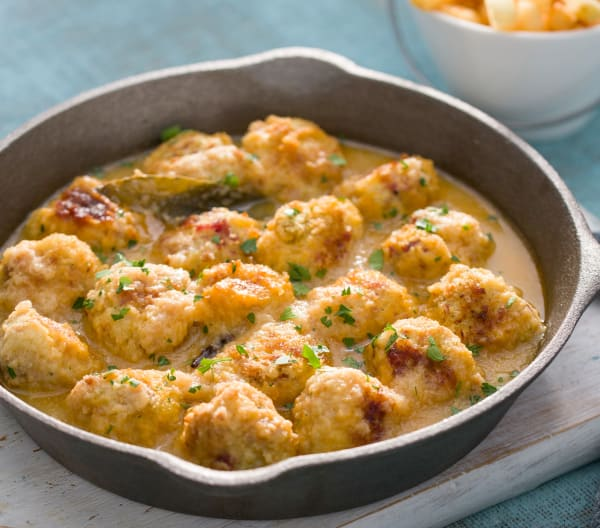

Albóndigas de sepia con jamón al horno
Compartir en redes

Dificultad
Fácil
Tiempo de preparación
30min
Tiempo total
1h
Raciones
6 raciones
Ingredientes
100 g de pan blanco semiduro (del día anterior) en trozos
2 dientes de ajo
3 ramitas de perejil fresco (hojas y parte del tallo) y 1 cucharada picado para espolvorear
200 g de jamón serrano en dados de aprox.1 cm
400 g de sepia semicongelada en trozos
1 pastilla de caldo de pescado (para 0.5 l) desmenuzada
1 pellizco de pimienta blanca molida
2 huevos
40 g de aceite de oliva y un poco más para engrasar
200 g de cebolla en cuartos
1 cucharadita de pimentón
1 hoja de laurel seca
200 g de vino blanco
300 g de agua
2 clavos
Información nutricional
Calorías = 1076 KJ/257 kcal
Proteínas = 25.6 g
Carbohidratos = 10.5 g
Grasa = 12.6 g
Fibra = 1.2 g
¿Te ha gustado? Déjanos tu opinión:
Nombre:
Email:
¿Qué es lo que más te ha gustado de la receta?: